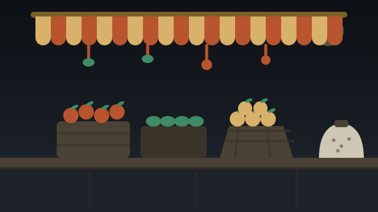

What's here
The trades the guide lists,
and how to reach them.
A trade only appears here if a public source places at least one shop of it at this market. The count on each card is counted from the listings file, not estimated.
In the file now
Trades with at least one listing.
The listings file did not load, so the trades cannot be counted yet.
A count is how many listings the file holds for that trade — not how many shops are actually open at the market. Nobody has walked the row yet.
Getting to the market
One point, given by the owner.
The guide has a single map point for ICHHAPUR: the coordinates the owner supplied. Public directories put the market roughly 7 km from it, so the guide uses the owner's point and says so instead of picking a winner.
- Locality
- Ichhapur, Bhadrak, Odisha
- Market point
- 21.045677123140994, 86.55692995394432
- Distances
- Straight-line from that point, not a walking route.
